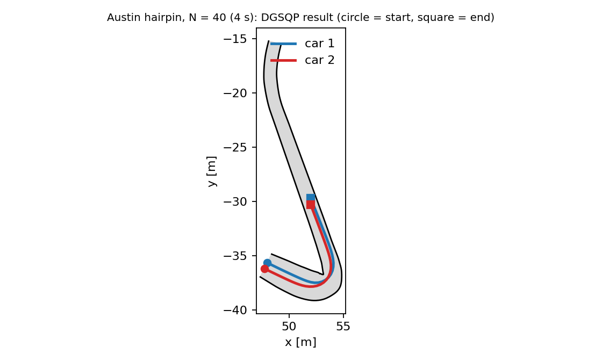

DGSQP
Dynamic Game Sequential Quadratic Programming ([ZB23]). Computes a local open-loop generalized Nash equilibrium of a discrete-time game with nonlinear dynamics and constraints by solving one convex quadratic program per iteration. This is a Julia implementation of the algorithm of the paper and of its reference code (https://github.com/zhu-edward/DGSQP, MIT licence).
Implemented in DifferentialGamesBaseSolvers.jl (src/solvers/DGSQP), with a test suite and a replication of the paper's curved-track study. The examples on this page were run against the current sources but are not executed by the documentation build.
Algorithm
With the shared multiplier $\lambda\ge0$ (a normalized equilibrium), a local equilibrium of the open-loop game satisfies the KKT system
\[\nabla_{u^i}\mathcal L^i(u,\lambda)=0\ \ \forall i,\qquad C(u)\le0,\qquad \lambda^\top C(u)=0,\qquad \lambda\ge0 ,\]
where $\mathcal L^i=J^i+C^\top\lambda$ and $C$ stacks all (private and shared) constraints. Each iteration
- evaluates $h=[\nabla_{u^i}J^i]_i$, $G=\partial C/\partial u$, the game Jacobian $L=\partial[\nabla_{u^i}\mathcal L^i]_i/\partial u$ (non-symmetric in general) and its projection $B=\mathrm{proj}_{\succeq0}\big((L+L^\top)/2\big)+\epsilon I$;
- solves the convex QP $\min_p\ \tfrac12p^\top Bp+h^\top p\ \ \text{s.t.}\ C+Gp\le0$ and sets the dual step to the QP multiplier minus the current $\lambda$;
- accepts the step with the merit function $\phi=\tfrac12\|\nabla\mathcal L\|^2+\ldots+\mu\|C-s\|_1$ ($s=\min(0,C)$) and either a monotone backtracking line search or the paper's non-monotone (watchdog) strategy, which tolerates a few merit-increasing steps before insisting on a decrease.
Close to a solution that satisfies the LICQ and second-order conditions the method converges linearly (Theorem 1 of the paper). Derivatives are computed exactly with nested ForwardDiff; the QPs are solved with Clarabel.
The convergence guarantee is local. The returned point satisfies the KKT conditions to the tolerances p_tol, d_tol when converged is true and solver_info[:status] is :conv_abs_tol. The status :conv_rel_tol means the iterates stopped moving while primal feasible, which the paper notes need not be a local equilibrium. To certify a solution use best_response_gap (below).
Usage
using DifferentialGamesBase, DifferentialGamesBaseSolvers
sol = solve(game, DGSQP()) # defaults of the reference implementation
sol = solve(game, dgsqp_paper_options()) # the settings of the paper's experiments
sol.converged, sol.solver_info[:status], sol.solver_info[:cond] # (p_feas, comp, stat) residualsIt accepts any GameProblem the other open-loop solvers accept (LQGameProblem, PDGNEProblem, constraints of every type) and follows the same cost-argument conventions as ALGAMES (joint state and control for nonlinear costs; see Conventions). Dynamics are discretized as in ALGAMES (RK4 of a continuous right-hand side, the exact map for linear dynamics).
Games written directly in the controls
OpenLoopGame is the interface the solver works on: the cost of every player and the stacked constraints as functions of the decision vector $w=[\mathrm{vec}(U^1);\ldots;\mathrm{vec}(U^M)]$. Because a cost is an arbitrary function of the joint controls, anything that depends on the previous input (input-rate costs and bounds) is written directly:
costs = Function[w -> (w[1] - 1)^2 + 0.5w[1]*w[2], # J¹(a, b)
w -> (w[2] + 1)^2 + 0.5w[1]*w[2]] # J²(a, b)
game = OpenLoopGame([1, 1], 1, costs, w -> [w[1] - w[2] - 2.0]) # shared constraint a − b ≤ 2
res = dgsqp_solve(game, [0.0, 0.0]; solver = dgsqp_paper_options())
res.w, res.λ # ≈ [1.0, -1.0], λ ≈ 0.5 (the constraint is active)The functions must be generic in the number type (they are differentiated twice).
Options
| Option | Default | Meaning |
|---|---|---|
sqp_iters | 50 | maximum SQP iterations |
p_tol, d_tol | 1e-3 | primal feasibility; stationarity and complementarity |
reg | 1e-3 | regularization $\epsilon$ of the projected Hessian |
beta, tau | 0.25, 0.5 | sufficient-decrease constant and backtracking factor |
line_search_iters | 50 | backtracking steps |
nonmono_ls, watchdog_iters | false, 5 | the non-monotone strategy and the number of relaxed steps it allows |
merit_function | :stat_l1 | the paper's merit function; :stat drops the ℓ¹ term |
rel_tol_iters | 3 | tiny consecutive steps that end the solve ("relative tolerance") |
divergence_tol, merit_max, time_limit | 1e5, 1e6, Inf | divergence test, watchdog abort level, wall-clock limit |
terminal_constraints | false | also enforce state-only constraint rows at the terminal state (GameProblem only) |
step_acceptance, reg_decay, nms_frequency, nms_memory_size, merit_decrease, delta_decay, delta0_factor | :line_search, 1, 5, 3, 0.01, 0.95, 20 | the racing-paper step acceptance, see below |
elastic_mode, divergence_recovery | false | extensions, see below |
The defaults are those of the reference DGSQPParams. The paper's experiments use dgsqp_paper_options(): reg = 0, nonmono_ls = true, beta = 0.01. Use the non-monotone line search for hard problems: on the lane-swap game of the constrained tutorial the monotone search with beta = 0.01 stalls at a non-stationary point (the SQP direction is not a descent direction of the merit function), while the watchdog strategy converges.
Certifying a solution
best_response_gap(game, sol) holds the other players' controls fixed, solves each player's own constrained problem (a local open-loop best response) and returns the cost improvement. At a local equilibrium it is zero; a positive value shows the point is not an equilibrium even when the residuals look small. It works on a solution from any solver. This is the check the :nash_residual metric of the benchmark package does not provide.
sol = solve(game, dgsqp_paper_options())
best_response_gap(game, sol) # ≈ [0.0004, 0.0004] on the lane-swap gameCapabilities
:LQGame :NonlinearGame :GNEP :ConstrainedGame :UnconstrainedGame :DiscreteTime :SeparableDynamics :SharedConstraints; returns an OpenLoopStrategy and equilibrium_type = :OpenLoopNash. Solution fields: solver_info[:status] (:conv_abs_tol, :conv_rel_tol, :max_it, :diverged, :qp_fail, :time_limit), :cond, :qp_solves, :history, and the multipliers in solver_info[:duals].
The racing-paper variant and the Austin hairpin
The follow-up paper on racing ([ZB24], DGSQP_v2_frenet_approx.py in the reference code) changes the step acceptance: a decaying regularization $\epsilon_q=\epsilon_0\eta^q$ ($\epsilon_0=100$, $\eta=0.95$), a merit function without the complementarity term, and a non-monotone scheme of d-steps (relaxed full steps while the step norm stays below a decaying limit) and m-steps (every fifth iteration, which must bring the merit below $(1-\sigma)$ times the largest of the last three values, otherwise the iterate returns to the last checkpoint and an Armijo line search is run). dgsqp_racing_options() selects it (step_acceptance = :nms).
The approximate-dynamics (MPCC) reformulation as a solver feature (the example below writes the MPCC cost directly) and BFGS Hessians. By default an infeasible QP stops the solve with :qp_fail, as in the reference (see elastic_mode for an extension). When both the iteration limit and convergence hold on the same iteration, convergence is reported.
Structured derivatives: SeparableRolloutGame
Differentiating a whole rollout twice is too slow for a long horizon with an expensive step map (a racing game with ten RK4 substeps per step and 420 decision variables would take minutes per Hessian). SeparableRolloutGame describes a game with separable dynamics xⁱ₊ = fⁱ(xⁱ, uⁱ) and node-wise coupling (cost and constraint functions of the states, controls and previous controls at each node) and assembles the exact game Jacobian from per-step Jacobians and a second-order adjoint recursion: 0.14 s per evaluation for the 420-variable hairpin game, and identical to whole-rollout automatic differentiation to 1e-15 (this is tested, and the generic OpenLoopGame(game) conversion is provided for such cross-checks).
The hairpin example
src/solvers/DGSQP/examples/austin_hairpin.jl writes the hairpin racing problem of the FALCON suite (Scenario 3 of the paper) as a SeparableRolloutGame: two cars with the dynamic bicycle model and Pacejka tyres (1/10-scale parameters), RK4 with ten substeps per 0.1 s, input and input-rate costs, the contouring/lag cost with $q_l=20$, the competitive terminal progress term, control bounds, the hard track-boundary constraints and bounding-circle collision avoidance on the s ∈ [60, 90] m segment. It needs DifferentialGamesBenchmarks for the track data and the vehicle model.
include("austin_hairpin.jl")
game, w0, info = austin_hairpin_game(; N = 25)
res = dgsqp_solve(game, w0; solver = dgsqp_racing_options())
hairpin_metrics(game, res.w, info) # progress, separation, track clearance, lagResults with dgsqp_racing_options() from a closed-loop centre-line plan (one run each, on the machine used for this documentation):
The two cars start side by side at $\pm0.3$ m from the centre-line with 2 m/s, the horizon is $N\cdot0.1$ s, and a run is converged when the KKT residuals are below $10^{-4}$.
| $N$ (horizon) | converged | iterations | time | progress of car 1 / 2 | min. separation (limit 0.595) | min. track clearance |
|---|---|---|---|---|---|---|
| 25 (2.5 s) | yes | 484 | 56 s | 8.25 m / 7.52 m | 0.595 m | 0.54 m |
| 40 (4.0 s) | yes | 364 | 71 s | 14.50 m / 13.95 m | 0.595 m | 0.35 m |
| 55 (5.5 s) | no (max. iterations) | 1069 | 485 s | 13.41 m / 13.43 m | 0.596 m | 0.41 m |
| 70 (7.0 s, the FALCON figure) | no (max. iterations) | 1039 | 852 s | 17.16 m / 17.18 m | 0.596 m | 0.36 m |
"Iterations" counts all iterations, including d-steps; sqp_iters = 500 limits the number of m-steps. For the converged runs the KKT residuals are below $10^{-4}$ and the constraints hold (the separation sits exactly on its limit: the collision constraint is active). The two cars end with a different progress, car 1 ahead, which is what the competitive terminal term asks for.

DGSQP does not solve the full 7 s example of the FALCON repository. For $N=55$ and $N=70$ the iterates never leave the neighbourhood of the starting plan: every trial step increases the merit function and the watchdog returns to the first checkpoint (the final progress equals that of the warm start, and the KKT residual is that of the warm start, of order $10^2$). The reference solver reports the same qualitative trend in the paper (success falls with the horizon); the paper's studies stop at $N=25$. FALCON, the solver this example comes from, is stated in its repository to converge at $N=70$, which was not run here. A warm start that solves each car's problem alone (as the FALCON script does) did not help: it makes both cars drive the same line and start inside the collision constraint, so the first QP is infeasible and the elastic-mode fallback of the reference is needed.
The Racing.AustinNominal_v1 benchmark of DifferentialGamesBenchmarks.jl is a different formulation of this problem (a GameProblem with one RK4 step per 0.05 s, no input-rate terms, a 20 m segment); this solver was not run on that game, whose generic derivatives are too slow for the step count.
Reproducing the FALCON paper's DG-SQP comparison
The FALCON paper compares FALCON and DG-SQP on a two-player race through the sharp corner s ∈ [60, 80] m of the Austin track ($N=25$, $\Delta t=0.1$ s, $M=10$ RK4 substeps, 50 random initial conditions). Here the same experiment is run with the Julia DG-SQP of this ecosystem and with FALCON, on the same 50 initial conditions (examples/data/f1_austin_benchmark_ics.csv, from the FALCON repository's dgsqp_benchmark.npz), the same game (FALCON's script: dynamic bicycle, q_l = 20, hard track boundaries), the same warm start (as in the paper, the single-agent plans computed by FALCON; examples/falcon_export.jl) and the same convergence tolerances: feasibility $\le10^{-4}$ and optimality (FALCON: $\max_i|\Delta Q^i|\le2\cdot10^{-2}$; DG-SQP: stationarity and complementarity $\le2\cdot10^{-2}$).
| Algorithm | Converged | Time, converged (s) | Iterations, converged | Time, all (s) |
|---|---|---|---|---|
| DG-SQP, Python (paper) | 72 % (36/50) | 50.021 ± 19.269 (31.696–124.621) | 422.8 ± 138.0 (276–947) | 81.471 |
DG-SQP, Julia, reference settings (dgsqp_benchmark_options()) | 66 % (33/50) | 22.069 ± 3.669 (15.156–32.772) | 394.1 ± 56.1 (275–577) | 15.058 |
DG-SQP, Julia, tuned (dgsqp_tuned_options()) | 100 % (50/50) | 20.636 ± 5.113 (16.576–47.843) | 361.6 ± 58.5 (302–648) | 20.636 |
After tuning, DG-SQP reaches 100 % on these initial conditions (the timings come from sequential runs on an otherwise idle machine; the Julia DG-SQP uses structured exact derivatives). Per-sample results are in examples/data/ (julia_dgsqp_results_ql20.csv: reference settings; julia_dgsqp_tuned_results.csv: tuned).
DG-SQP: tuning
With the reference settings the Julia DG-SQP fails on 17 of the 50 initial conditions (14 diverged after a relaxed step, 3 infeasible first QP). The sweeps below ran on those 17 plus 6 that converge (23 cases, same warm starts):
Settings (on top of dgsqp_benchmark_options()) | Converged (of 23) | Mean iterations |
|---|---|---|
| reference ($\epsilon_0=100$, decay 0.95) | 6 | 409 |
elastic_mode | 6 | 409 |
reg = 1e3 | 19 | 935 |
reg = 1e4 | 18 | 1413 |
reg = 1e3, elastic_mode | 22 | 921 |
reg = 1e3, reg_decay = 0.9, elastic_mode | 22 | 519 |
elastic_mode, divergence_recovery (reg 100) | 23 | 829 |
reg = 1e3, reg_decay = 0.9, delta_decay = 0.95, elastic_mode, divergence_recovery | 23 | 389 |
same with reg = 300 | 21 | 363 |
A larger initial regularization removes the relaxed-step blow-ups (the dominant failure) at the cost of more iterations, a faster decay buys the iterations back, and the two extensions below handle what remains. The selected configuration, dgsqp_tuned_options(), converges on all 50 initial conditions in 362 ± 59 iterations, fewer than the reference settings need on the ones they solve.
Two options are extensions of the reference code (off by default): elastic_mode solves an elastic QP (slack penalty ρ = η = 1000) when a QP is infeasible, the reference defines such a QP but its solve loop never calls it; divergence_recovery returns to the last checkpoint with ten times the regularization when the stationarity residual blows up, instead of stopping with :diverged.
Reproduce:
# 1. Export the warm starts from the FALCON repository
# FALCON_EX=<FALCON>/examples julia --project=<FALCON env> falcon_export.jl 50 outdir
# 2. DG-SQP side
include("austin_benchmark.jl")
F = readdlm("outdir/falcon_ws_and_results.csv", ',', Float64)
warm = [(reshape(F[i, 7:81], 3, 25), reshape(F[i, 82:156], 3, 25)) for i in 1:50]
rows = austin_dgsqp_benchmark_tuned(; samples = 50, warm_starts = warm)
summarize_benchmark(rows)Not run: the Python DG-SQP itself (its numbers are those stored with the initial conditions), a variant with the reference code's q_l = 1000 and linearised boundary constraints, and the paper's second FALCON initial-velocity study. The convergence rates depend on the warm start: from a closed-loop controller plan instead of the single-agent plans the same solver diverges on most of these initial conditions (the plan leaves the track on about half of them); the reference's collision-aware LTV-MPC warm start is not ported.
Replication of the paper
The curved-track study of Sec. V-A of the paper is in src/solvers/DGSQP/examples/curved_track.jl (a port of scripts/DGSQP_ALGAMES_monte_carlo_curve.py): two cars with the Frenet-frame kinematic bicycle model (Euler, $T_s=0.1$), cost (19) with input-rate terms, input and rate bounds, track boundary and collision avoidance, PID lane-following initial guesses, 200 random collision-free initial states for each turn angle $\theta$ and horizon $N$. "Converged" means the KKT conditions hold to $10^{-3}$. Results with dgsqp_paper_options() (this implementation, one run of 200 trials; the paper's DG-SQP row in parentheses):
| $\theta$ | $N$ | converged / 200 | max iterations reached | QP solves per solve |
|---|---|---|---|---|
| 45° | 10 | 200 (200) | 0 | 3.1 (3) |
| 45° | 15 | 200 (199) | 0 | 5.8 (6) |
| 45° | 20 | 196 (199) | 4 | 11.6 (14) |
| 45° | 25 | 192 (185) | 8 | 17.1 (17) |
| 75° | 10 | 199 (200) | 1 | 3.4 (3) |
| 75° | 15 | 200 (199) | 0 | 7.1 (9) |
| 75° | 20 | 193 (195) | 7 | 22.0 (21) |
| 75° | 25 | 180 (169) | 20 | 24.0 (25) |
| 90° | 10 | 200 (200) | 0 | 4.0 (4) |
| 90° | 15 | 200 (197) | 0 | 8.7 (9) |
| 90° | 20 | 193 (193) | 7 | 23.2 (25) |
| 90° | 25 | 181 (172) | 19 | 15.6 (17) |
The success rates agree with the paper's within sampling error (the initial states come from a different random stream), the number of QPs per solve is of the same size, and no trial diverged or failed in the QP (the paper also reports no failures for DG-SQP on this track), the failures being runs that reached the iteration limit. The mean time per successful solve is 0.03–0.3 s for $N\le15$ and 0.7–2.5 s for $N=20,25$ in this implementation on one machine (Julia, ForwardDiff Hessians); the paper's Python implementation reports 0.02–0.9 s. The table values in parentheses are transcribed from Table I of the paper (the DG-SQP row for # Conv, and the # Solves row).
Not replicated: the ALGAMES column of the paper's table. The paper's ALGAMES is a separate Python implementation on the same Euler-discretized problem; ALGAMES in this ecosystem takes a GameProblem with continuous dynamics and has no previous-input terms, so it cannot be run on this problem unchanged. The second study (racetrack with 1000 trials) and the merit-function ablation (Fig. 4) are also not reproduced.
The reduced version of this study (and the comparison against Table I) runs in the test suite and, with more trials, in the scheduled DGSQP GitHub workflow (src/solvers/DGSQP/test/paper_study.jl).
Differences from the reference implementation
| Reference (Python/CasADi) | This implementation |
|---|---|
| CasADi symbolic derivatives, dynamic programming for the Hessian | nested ForwardDiff through the rollout |
OSQP / qpOASES via CasADi conic | Clarabel |
| optional BFGS Hessian approximation | not implemented (exact Hessian only) |
IBR and PATH warm starts and solvers | not implemented |
initial dual lsqr | the equivalent pseudo-inverse solution of $GG^\top x=Gh$ |
| state-bound and constraint rows built per model | GameProblem constraints at nodes 1:N (terminal_constraints for the last node); OpenLoopGame for anything else |
Limitations
- Local method: the equilibrium found depends on the initial guess. On the lane-swap game DGSQP and
ALGAMESreturned different local equilibria (both pass the best-response test), the DGSQP one with lower cost for both players. - Cost: every iteration forms a dense game Jacobian $L$ with nested automatic differentiation; this scales as (decision variables)² rollouts. The paper's compiled symbolic derivatives are faster for long horizons.
- The merit function is not exact, so a trial can end with the iterates oscillating at the iteration limit (the dominant failure mode in the table above).
API
DifferentialGamesBaseSolvers.DGSQP — Type
DGSQP(; kwargs...) <: GameSolverDynamic Game SQP solver for open-loop generalized Nash equilibria (Zhu & Borrelli, ICRA 2023). Defaults are those of the reference implementation's DGSQPParams; dgsqp_paper_options returns the settings used for the paper's experiments.
Options
sqp_iters = 50: maximum SQP iterationsp_tol = 1e-3,d_tol = 1e-3: primal feasibility tolerance and stationarity/complementarity tolerance; converged whenmax(0, maxᵢCᵢ) < p_tol,‖λ∘C‖∞ < d_toland‖∇𝓛‖∞ < d_tolreg = 1e-3: regularizationεadded to the projected Hessian,B = proj_{⪰0}((L+Lᵀ)/2) + εIbeta = 0.25,tau = 0.5: sufficient-decrease constant and backtracking factor of the line searchline_search_iters = 50: backtracking stepsnonmono_ls = false: use the non-monotone (watchdog) line search of Sec. IV-Bwatchdog_iters = 5: relaxed stepst̂the watchdog allows before insisting on a decreasemerit_function = :stat_l1::stat_l1(the paper's merit function, Eq. 15) or:stat(no ℓ¹ term;μ = 0)rel_tol_iters = 3: consecutive iterations of tiny steps (‖Δu‖ < p_tol/2,‖Δλ‖ < d_tol/2) that terminate the solve when the iterate is primal feasible ("relative-tolerance" convergence)divergence_tol = 1e5: declare divergence when‖∇𝓛‖∞exceeds thismerit_max = 1e6: the watchdog abandons relaxed steps when the merit exceeds thistime_limit = Inf: wall-clock limit in secondsterminal_constraints = false: for aGameProblem, also enforce state-only constraint rows at the terminal statedivergence_recovery = false: when the stationarity residual blows up (> divergence_tol) after a relaxed step, return to the last checkpoint with a ten times larger regularization and a ten times smaller step limit instead of stopping (at mostmax_recoveriestimes). An extension of the reference, which stops with status:diverged; only forstep_acceptance = :nms.elastic_mode = false: when a QP is infeasible, solve an elastic QP instead,min ½pᵀBp + hᵀp + ½ρ‖t‖² + η𝟙ᵀts.t.C + Gp ≤ t,t ≥ 0(elastic_rho,elastic_eta). The reference code defines this QP but its solve loop never uses it; here it removes:qp_failstops caused by infeasible linearized constraints.step_acceptance = :line_search::nmsselects the step-acceptance scheme of the racing paper (dgsqp_racing_options): a decaying regularizationε_q = reg·reg_decay^q, "d-steps" (relaxed full steps while the step norm stays below a decaying limitδ) and "m-steps" everynms_frequencyiterations that must decrease the merit function below(1−merit_decrease)·max(memory)of the lastnms_memory_sizevalues, with a return to the last checkpoint and an Armijo line search otherwise
The returned GNEPSolution has equilibrium_type = :OpenLoopNash, solver_info[:status] ∈ :conv_abs_tol, :conv_rel_tol, :max_it, :diverged, :qp_fail, :time_limit, and the KKT residuals in solver_info[:cond].
DifferentialGamesBaseSolvers.dgsqp_paper_options — Function
dgsqp_paper_options(; kwargs...) -> DGSQPThe settings used for the curved-track experiment of the paper (scripts/DGSQP_ALGAMES_monte_carlo_curve.py in the reference repository): reg = 0, nonmono_ls = true, beta = 0.01, tau = 0.5, 50 SQP iterations, tolerances 1e-3. Keyword arguments override.
DifferentialGamesBaseSolvers.dgsqp_racing_options — Function
dgsqp_racing_options(; kwargs...) -> DGSQPThe settings of the racing paper (Zhu & Borrelli, arXiv:2404.00186; DGSQPV2Params of the reference code): non-monotone step acceptance (step_acceptance = :nms), regularization ε₀ = 100 decaying by 0.95 per iteration, tolerances 1e-4, up to 500 iterations, merit decrease 0.01, checkpoint every 5 iterations, memory 3.
DifferentialGamesBaseSolvers.dgsqp_tuned_options — Function
dgsqp_tuned_options(; kwargs...) -> DGSQPThe configuration tuned for the Austin racing benchmark of the FALCON paper (see the manual): the racing paper's non-monotone step acceptance with a larger initial regularization (reg = 1000, decaying by 0.9), a d-step limit decaying by 0.95, checkpoints every 10 iterations with a merit memory of 10, tolerances p_tol = 1e-4, d_tol = 2e-2, and the two extensions elastic_mode and divergence_recovery. It converges on all 50 benchmark initial conditions (the paper's DG-SQP settings: 33 of 50), in about 390 iterations. Keyword arguments override.
DifferentialGamesBaseSolvers.dgsqp_solve — Function
dgsqp_solve(game::OpenLoopGame, w0; solver = DGSQP(), λ0 = nothing, verbose = false) -> DGSQPResultRun Algorithm 1 of Zhu & Borrelli on an OpenLoopGame from the initial control guess w0. λ0 defaults to the least-squares estimate max(0, −(GGᵀ)⁺ G h) of the paper (Alg. 1, line 1).
DifferentialGamesBaseSolvers.DGSQPResult — Type
DGSQPResultResult of dgsqp_solve: w (decision vector), λ (multipliers, one per constraint row), converged, status, iterations, qp_solves, cond (final (p_feas, comp, stat) residuals), history (per-iteration residuals), time.
DifferentialGamesBaseSolvers.OpenLoopGame — Type
OpenLoopGame(game::SeparableRolloutGame) -> OpenLoopGameThe same game with generic (whole-rollout) derivatives. Slow for long horizons; used to cross-check the structured derivatives and for best_response_gap. Constraint rows are ordered node by node, as in the structured game.
OpenLoopGame(game::GameProblem; terminal_constraints = false) -> OpenLoopGameExpress a Base GameProblem in the players' control sequences: the state trajectory is the rollout of the discrete dynamics (RK4 for continuous dynamics, the exact map for LinearDynamics, as in ALGAMES), the cost of player i is total_cost of the rollout, and the constraints are all private and shared constraints evaluated at (x_k, u_k) for k = 1, …, N (with x_1 = x₀). Cost and constraint functions follow the same argument conventions as ALGAMES.
DifferentialGamesBaseSolvers.SeparableRolloutGame — Type
SeparableRolloutGame(control_dims, state_dims, N, x0, steps, cost, constraints; u_prev0)An open-loop game in which every player i has its own state xⁱ evolving by a discrete map xⁱ_{k+1} = steps[i](xⁱ_k, uⁱ_k) (separable dynamics, as in a PD-GNEP) and everything else couples the players only at a node. The cost and constraint functions are written per node:
cost(i, k, X, U, Up) -> Realfork = 0, …, N(the stage cost atk < Nand the terminal cost atk = N)constraints(k, X, U, Up) -> Vectorfork = 0, …, N(rows that do not apply at a node are simply left out), meaning≤ 0
where X, U, Up are vectors with one entry per player: the states xⁱ_k, the controls uⁱ_k (zeros at k = N) and the previous controls uⁱ_{k−1} (u_prev0 at k = 0). The functions must be generic in the number type.
Compared with the generic OpenLoopGame the derivatives are assembled exactly from per-step Jacobians and a second-order adjoint recursion instead of differentiating the whole rollout twice, so the cost of the game Jacobian grows like N² small operations rather than N² full rollouts. This is what makes long-horizon problems (hundreds of decision variables with an expensive step map) tractable.
DifferentialGamesBaseSolvers.control_ranges — Function
control_ranges(game::OpenLoopGame) -> Vector{UnitRange{Int}}Index range of each player's block of the decision vector.
DifferentialGamesBaseSolvers.split_controls — Function
split_controls(game::OpenLoopGame, w) -> Vector{Matrix}Per-player control matrices Uⁱ (mᵢ × N) of a decision vector.
DifferentialGamesBaseSolvers.join_controls — Function
join_controls(U::Vector{<:AbstractMatrix}) -> VectorStack per-player control matrices into a decision vector (inverse of split_controls).
DifferentialGamesBaseSolvers.best_response_gap — Function
best_response_gap(game::OpenLoopGame, w, i; solver) -> (gap, w_br)Equilibrium certificate for player i: hold the other players' controls in w fixed, solve player i's own constrained problem (an open-loop best response, from w's own block, with DGSQP itself as the single-player SQP solver) and return gap = Jⁱ(w) − Jⁱ(w_br) ≥ 0 together with the decision vector with the improved block. At a local generalized Nash equilibrium no unilateral deviation lowers the cost, so every player's gap is zero (up to the solver tolerance); a positive gap exposes a point that is not an equilibrium even when the KKT residuals look small. Local: it finds the nearest local best response.
best_response_gap(game::GameProblem, sol::GNEPSolution; kwargs...) -> Vector{Float64}Best-response gaps of every player of a solution of game (any solver), using the control sequences in sol. See the OpenLoopGame method.